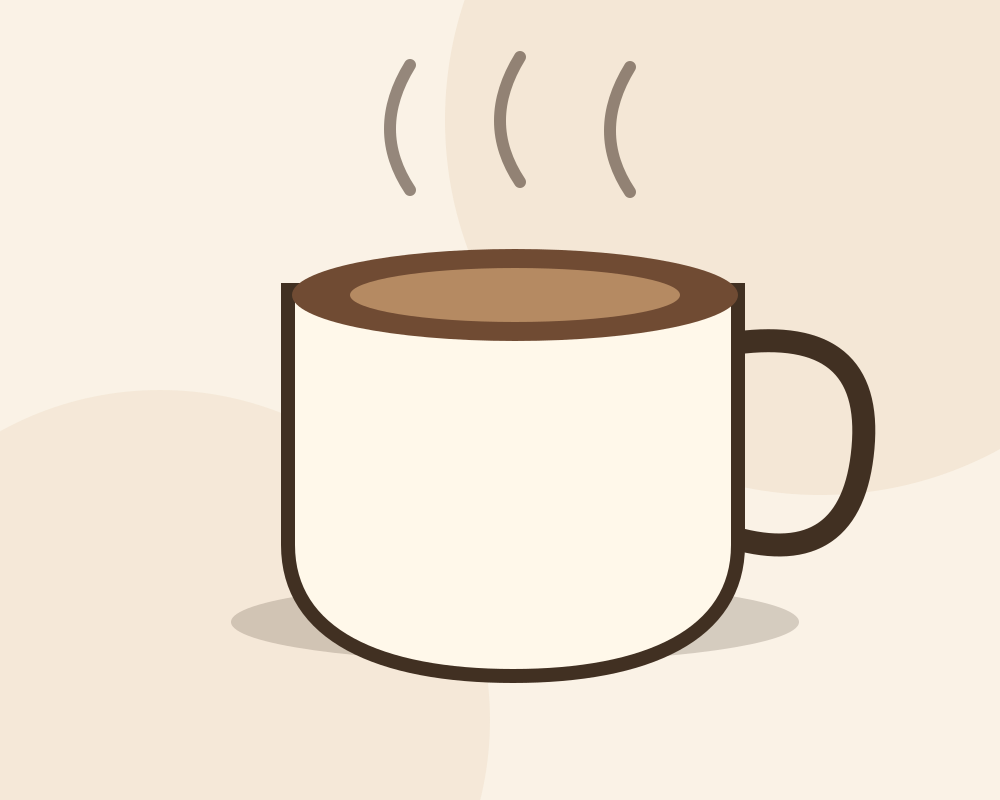

Espresso Bar
Classic coffees, made with care.
SLOW MORNINGS. GREAT COFFEE.
Coffee with character, good conversations and a slower start to your day.
Illustrative Cafés & Coffee Shops website concept by MyBizDigital.

MORNING RITUAL / CONCEPT 0101 / COFFEE
Explore how this original website concept could present relevant cafés & coffee shops services or product categories. Everything here is illustrative.
Classic coffees, made with care.
A considered way to taste the beans.
A little something on the side.
Sample content for demonstration only. Actual services, prices and availability are not represented.
02 / THE EXPERIENCE
From the beans to the atmosphere, simple things can be extraordinary.
Discover our approach ↗03 / WHAT MATTERS
Different businesses need different information and interactions. This design concept is built around its own audience and goals.
An intentional design element for a clear, accessible visitor experience.
From the beans to the atmosphere, simple things can be extraordinary.
A practical digital journey without unnecessary distractions.
THE NEXT STEP
Morning Ritual is a fictional café demo. Menu and visiting information are illustrative.